CONHEÇA NOSSAS LOJAS
Clique em algum dos botões à esquerda para conferir as lojas de cada setor.
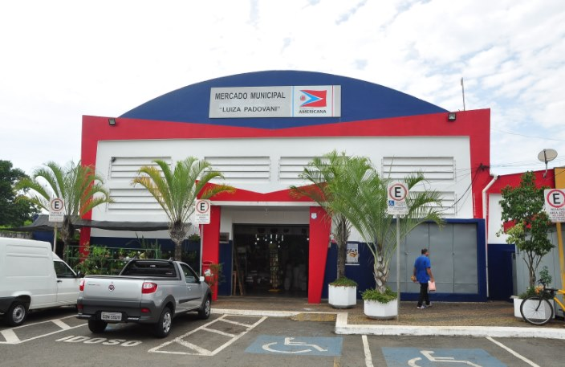Clique em algum dos botões à esquerda para conferir as lojas de cada setor.
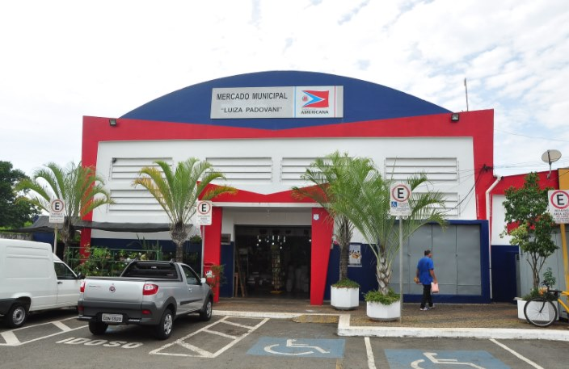Referência da região quando o assunto é carne, famosa franquia de açougues no estado, também presente no Mercado de Americana.
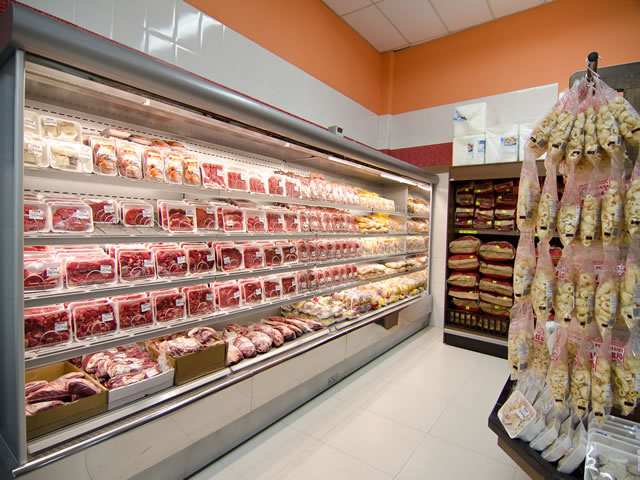Número: (19) 3466-1111
Email: acougueprime@gmail.com
Loja especializada em aquários para peixes de porte pequenos até médio, há mais de 10 anos no mercado.
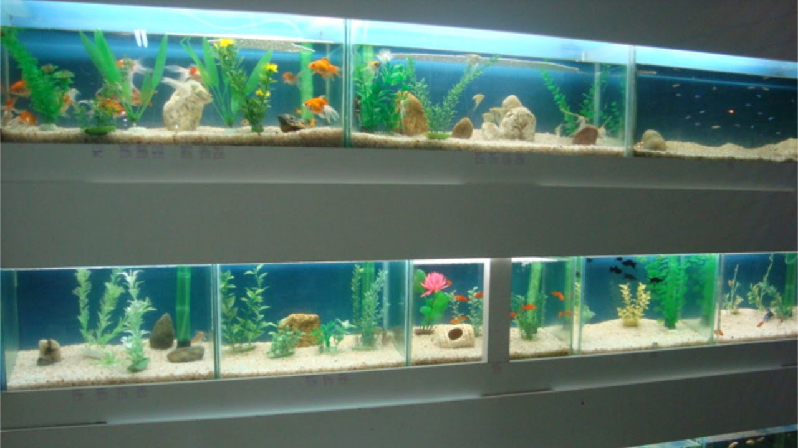Número: (19) 3466-2902
Email: atlantis.contato@hotmail.com
Tradicional loja de armarinhos, especializada na produção de costuras sob demanda, muito conhecida pelo seus preços baixos
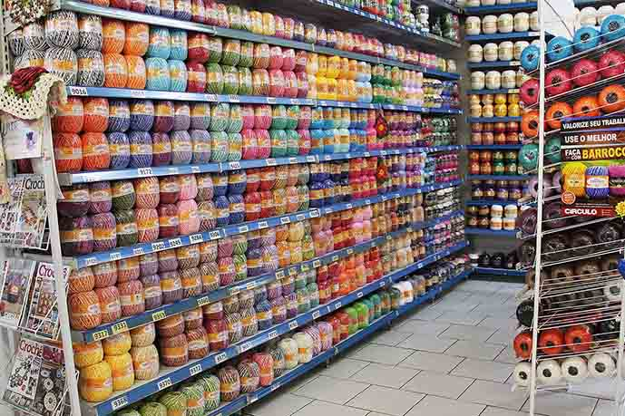Número: (19) 3466-7563
Email: camilla.armarinhos@outlook.com
Loja com foco em artesanatos personalizados feitos na hora, com materiais que podem ser levados até pelo cliente.
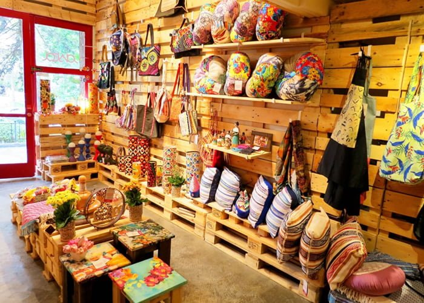Número: (19) 3466-9572
Email: artesanatos.make@gmail.com
Barberia com tematica masculina, com área de lazer, som e bebidas à vontade
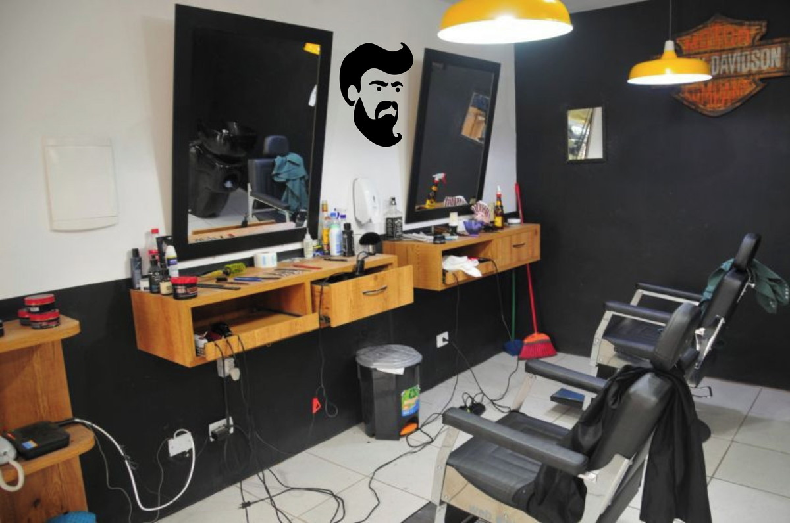Número: (19) 3466-2864
Email: cutndrink@outlook.com
Com bebidas do mundo todo, o estabelecimento oferece frequentemente eventos de bebidas com promoções e muito mais!
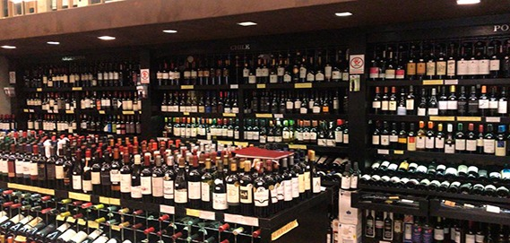Número: (19) 3466-5012
Email: freicanenca.bebidas@hotmail.com
Além de todas as bolachas tradicionais, a loja é famosa por oferecer vários sabores exóticos
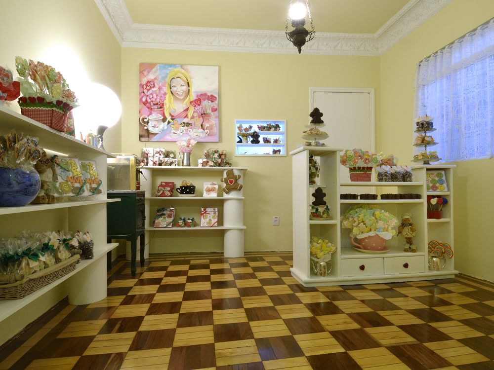Número: (19) 3466-9080
Email: crunch_bolachas@gmail.com
Trate seus cabelos no maior conforto da região, com serviços e preços diversos
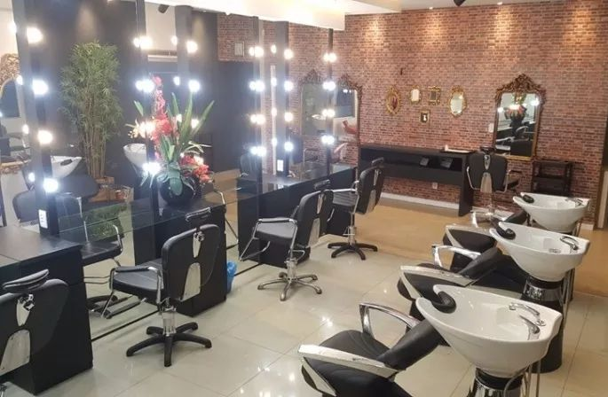Número: (19) 3466-2813
Email: iryna.hair@gmail.com
Aproveite cafés de diferentes lugares do mundo enquanto participa daquela reunião de amigos ou de negócios.
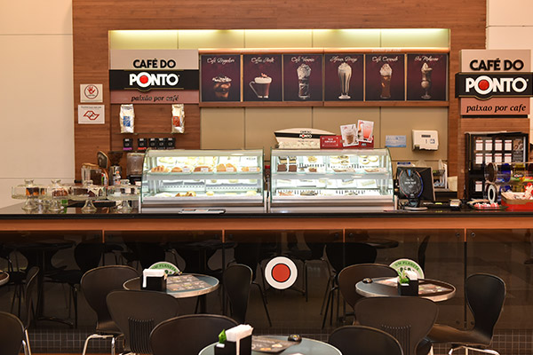Número: (19) 3466-3055
Email: cafe.doponto@hotmail.com
Calçados de marca para todos os gostos, com preços acessivéis.
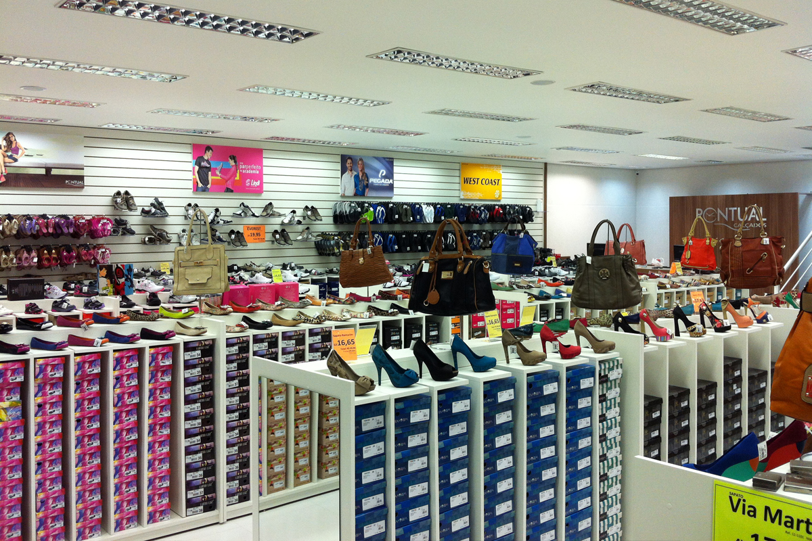Número: 3466-9945
Email: footgear.contato@gmail.com
Cereais de vários tipos, de fitness até extra açucarado, todos com preços pequenos.
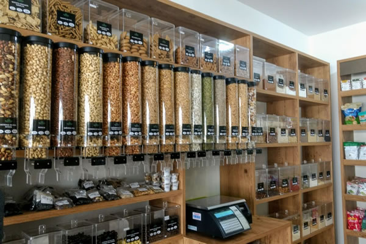Número: (19) 3466-9452
Email: reidoscereais.contato@hotmail.com
A loja possui os chapéis vintage mais usados da atualidade, além de oferecer ao cliente a personalização do seu chapéu.
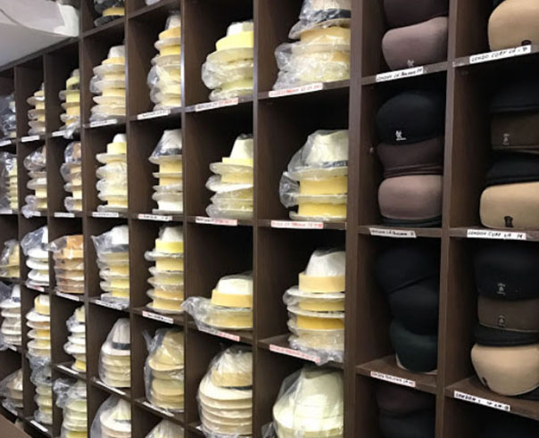Números: (19) 3466-9032
Email: aesquina.chapelaria@outlook.com
O estabelecimento trabalha com todo tipo de tecido e encomenda, além de oferecer locação.
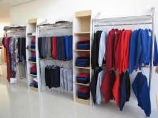Número: (19) 3466-2018
Email: diamante.confeccoes@gmail.com
Loja especializada em produtos congelados, franquia espalhada por todo Brasil, agora em Americana
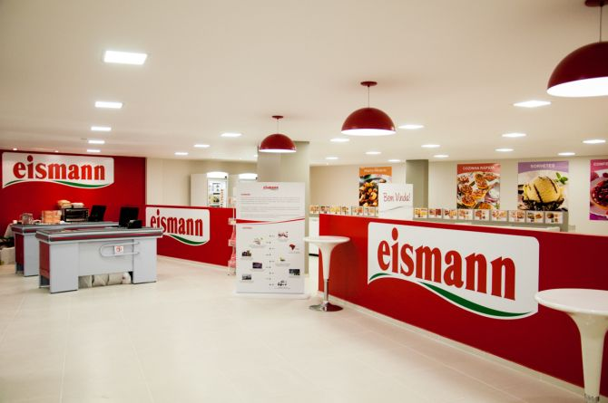Número: (19) 3466-2054
Email: eismann.contato@gmail.com
Uma das maiores franquias de cosméticos do Brasil, oferece os mais váriados produtos existentes no mercado.
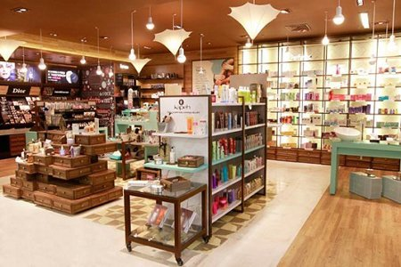Número: (19) 3466-3027
Email: thebeautybox@outlook.com
Doceria mais conhecida do Brasil, famosa por iventar diversos doces gigantes
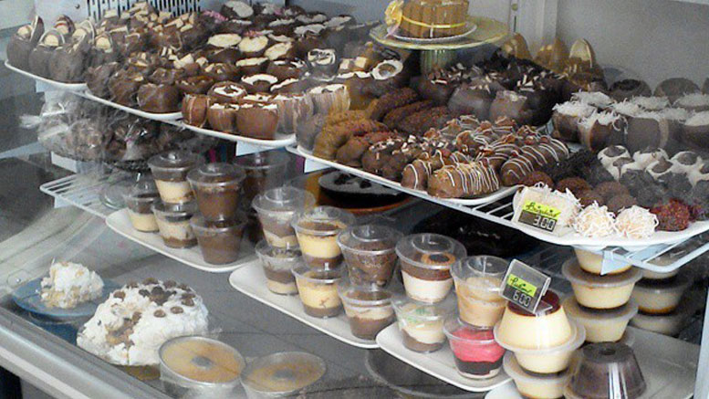Número: (19) 3466-6634
Email: candyisland.contato@outlook.com
Maior produtora de embalagens sob demanda da região, atualmente localizada somente no Mercado de Americana
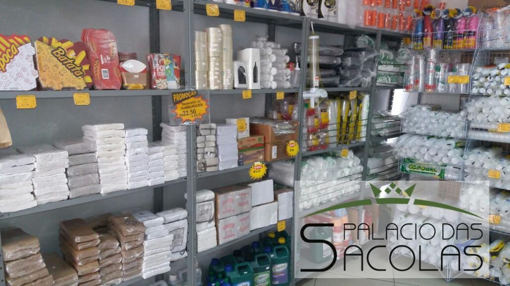Número: 3466-7457
Email: palaciodassacolas@gmail.com
Maior empório da cidade, com preços bem acessivéis.
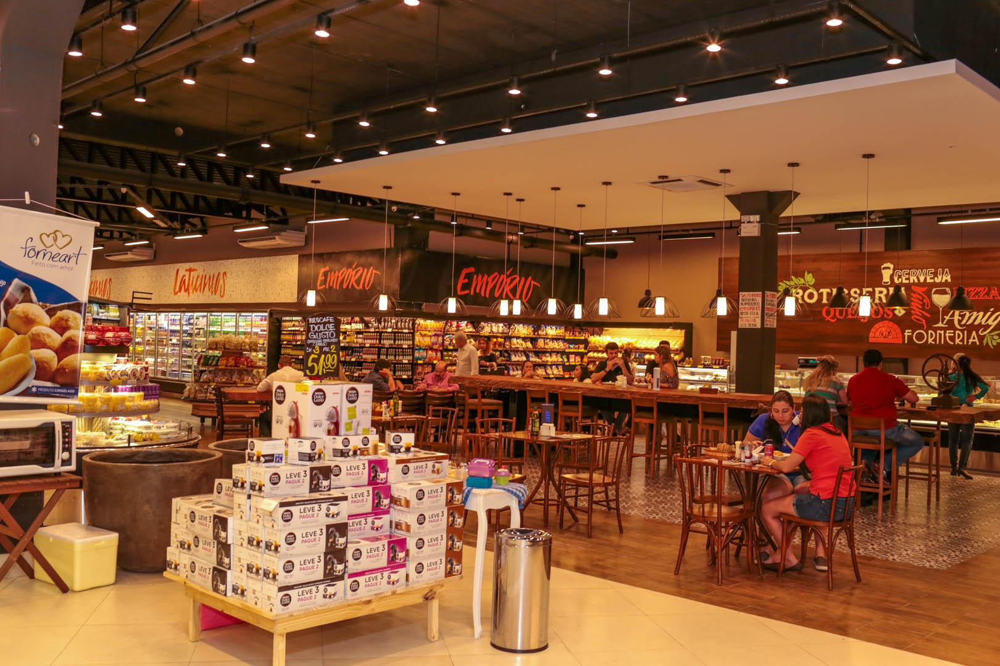Número: (19) 3466-8909
Email: emporioprime.contato@outlook.com
Oferecendo uma gama imensa de temperos e grãos, a Casa das Especiarias é a maior franquia do mercado no Brasil
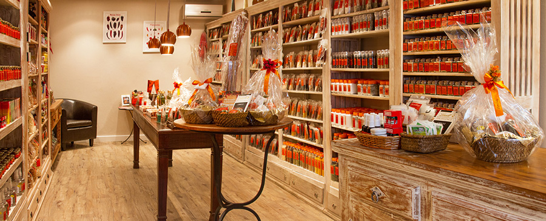Número: (19) 3466-9890
Email: casadasespeciarias@hotmail.com
Franquia mundial de farmácias, agora também em Americana, com planos e promoções mensais
Número: (19) 3466-6234
Email: morehealth@outlook.com
Como o nome sugere, a loja incentiva o consumo de frutas, visando uma qualidade de vida maior de seus clientes, sendo assim a loja não utiliza agrotóxicos em seus produtos
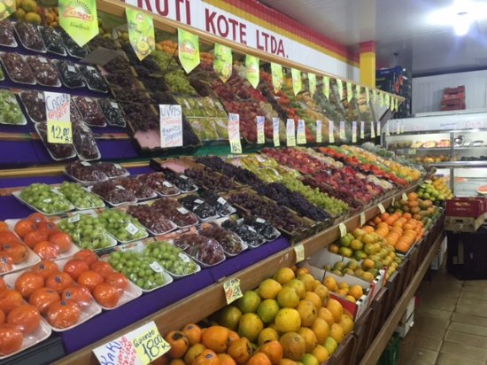Número: (19) 3466-4312
Email: eatfruit.contato@gmail.com
Franquia de informática mais velha do mercado, oferecendo também serviços de manutenção em aparelhos tecnológicos
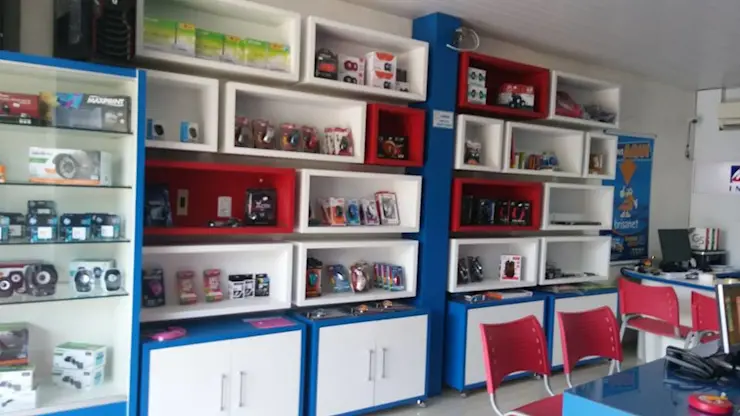Número: (19) 3466-0946
Email: hightech.contato@hotmail.com
Lanchonete tradicional da região de Americana, famosa pelos lanches gigantes que produz, podendo alimentar até 6 pessoas.
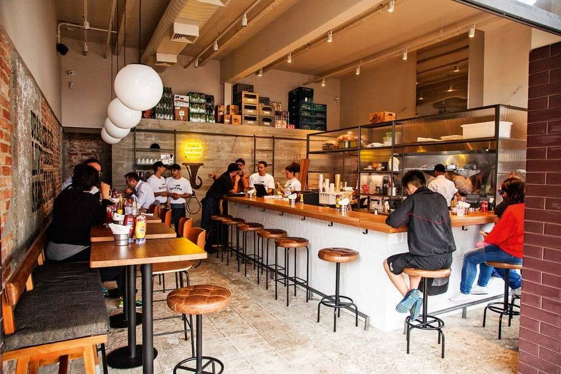Número: (19) 3466-8329
Email: makitolanches@gmail.com
O mercado possui um estabelecimento da rede de loterias da Caixa, com seu famoso atendimento para pagar contas e fazer seus jogos com segurança e praticidade.
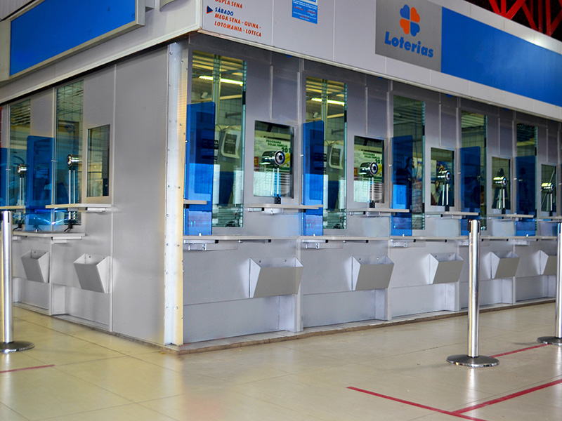Número: (19) 3466-0021
Email: caixa.contato@hotmail.com
Franquia renomada mundialmente por suas famosas massas gourmet, presente também no nosso Mercadão.
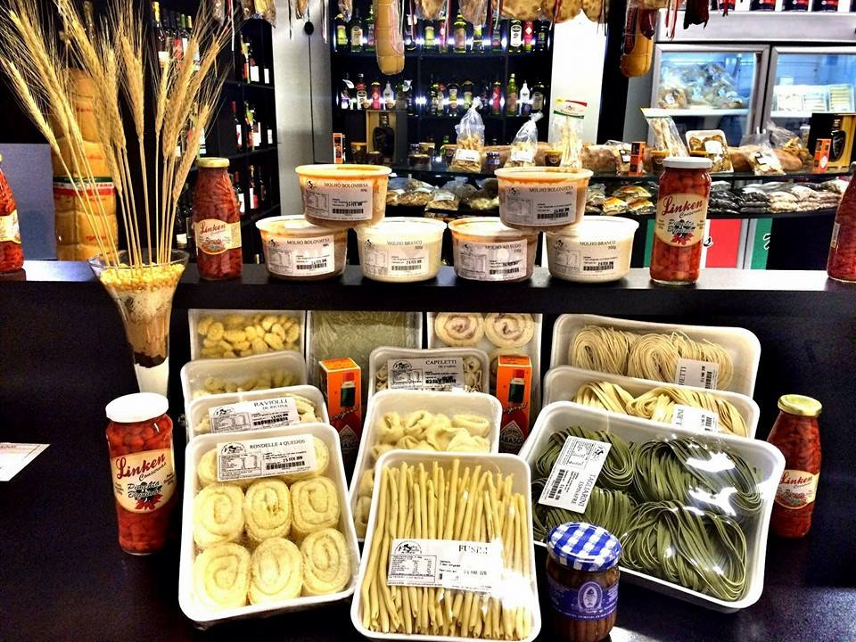Número: (19) 3466-0926
Email: pissani.contato@outlook.com
Estabelecimento especializado em customização de móveis e derivados.
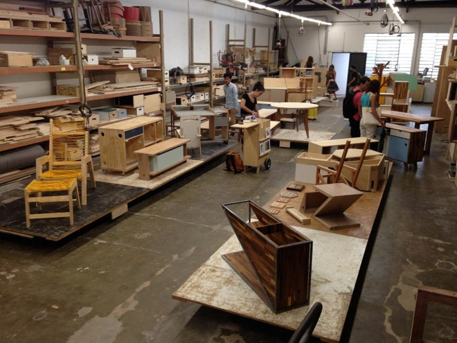Número: (19) 3466-0247
Email: marcearia.buogini@hotmail.com
Orgânicos de maior qualidade da região, franquia está no mercado há 20 anos classificada como produtora do alimento mais saudável do país.
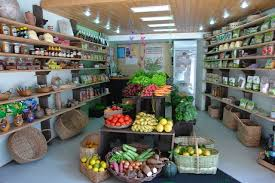Número: (19) 3466-1801
Email: tuttonatural.contato@gmail.com
Franquia de peixaria que era originalmente um grupo de pesca, após o sucesso da qualidade de seus peixes, começaram sua rede de lojas por todo o estado.
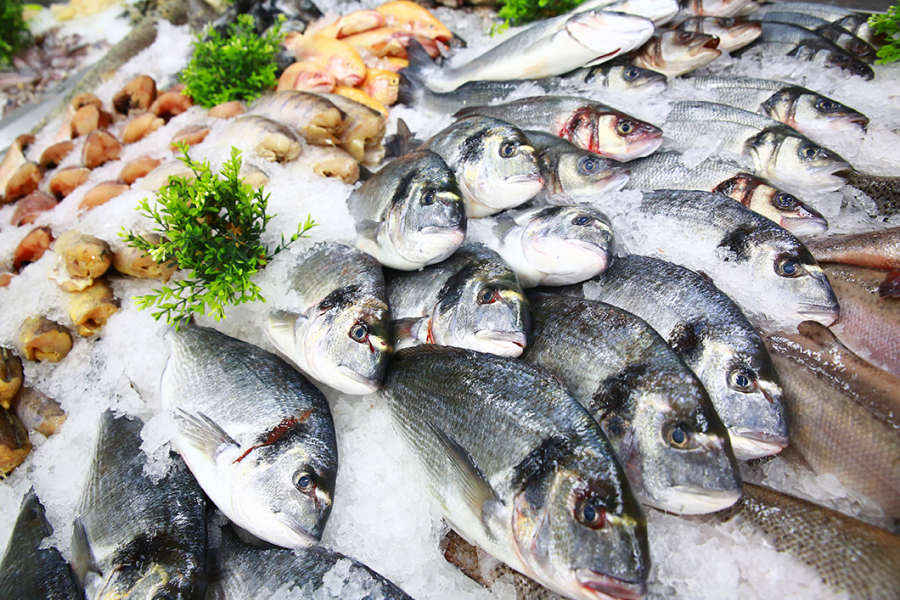Número: (19) 3466-8172
Email: goldfish.pesca@gmail.com
Franquia especializada no banho e tosa delivery de animais da região, a loja também oferece serviço de sócios, fornecendo descontos para os mesmos.
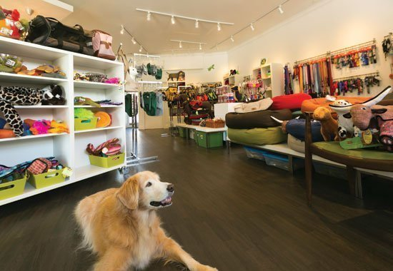Número: (19) 3466-8165
Email: lateshow.contato@outlook.com
Contendo lembranças para todas as datas comemorativas, a franquia especializada em presentes chega agora no Mercado Municipal de Americana.
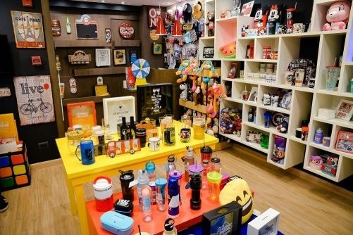Número: (19) 3466-2312
Email: misterybox.presentes@hotmail.com
Estabelecimento focado da venda de relógios importados.
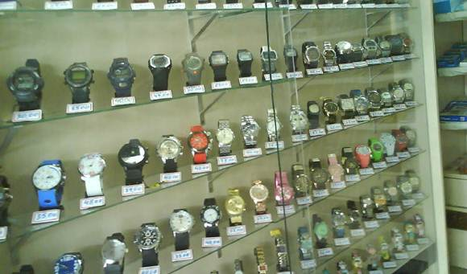Número: 3466-1132
Email: stopwatch.contato@gmail.com
Franquia de restaurantes conhecida nacionalmente pelo seu self-service ilimitado, com comidas tipicas e exóticas.
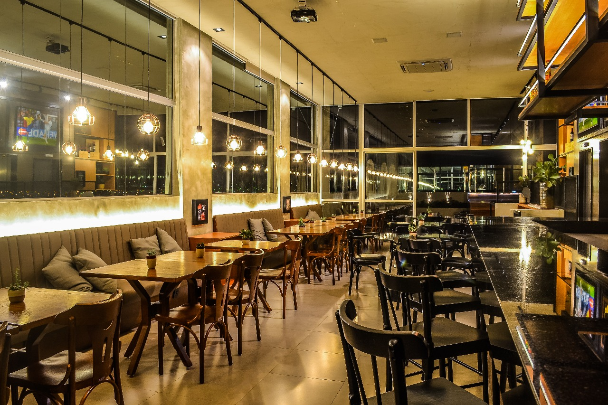Número: (19) 3466-2235
Email: donamaria.restaurantes@hotmail.com
Maior rede de revistarias do Brasil, presente também no Mercado, fornece as mais variadas revistas, novas e antigas.
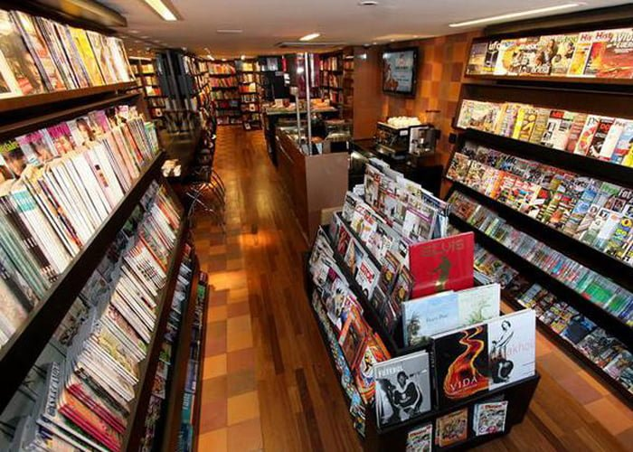Número: (19) 3466-2137
Email: panorama.revistas@gmail.com
Sapataria focada em customização de calçados, trazendo tecnologias novas do mercado para modelos antigos.
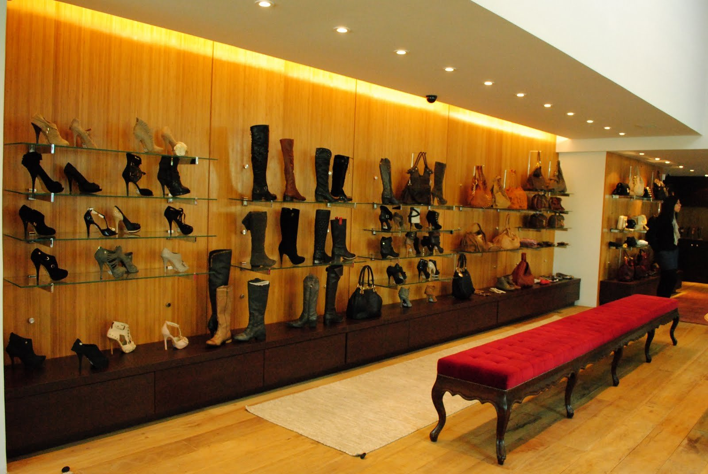Número: (19) 3466-1652
Email: hermesboots.contato@hotmail.com
Vinda do exterior, franquia especializada na produção de secos e molhados de culturas exteriores
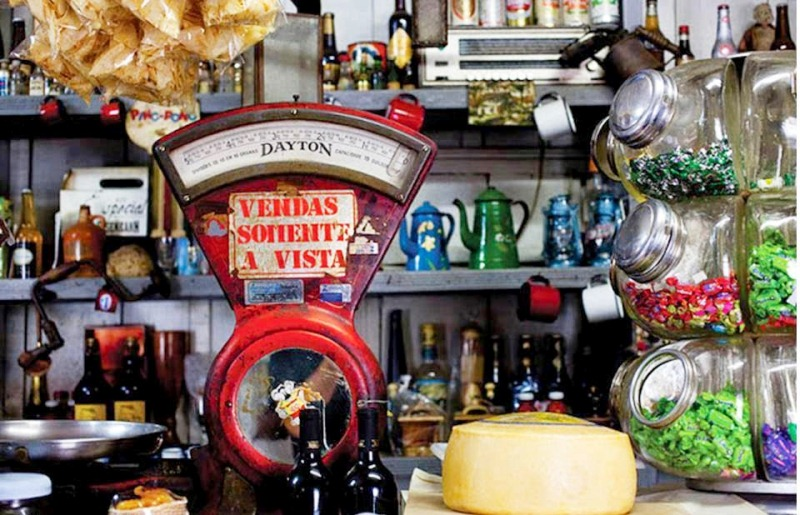Números: (19) 3466-3458
Email: marche.contato@outlook.com
Franquia mais famosa nacionalmente de sorvetes, com preços excelentes assim como a qualidade de seus sorvetes.
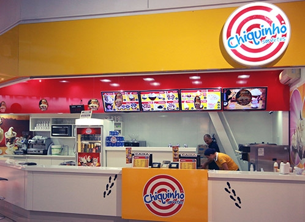Número: (19) 3466-5476
Email: chiquinho.contato@gmail.com
Estabelecimento fornece diversos produtos relacionados ao fumo, além de decorações exóticas.
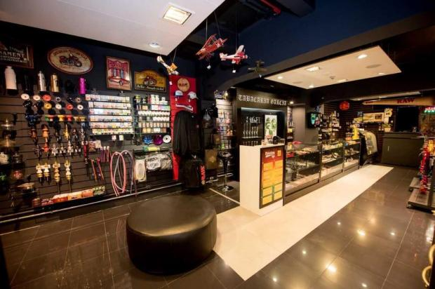Número: (19) 3466-4437
Email: soul.tabacaria@gmail.com
Locação, encomenda e compra de roupas sob medida.
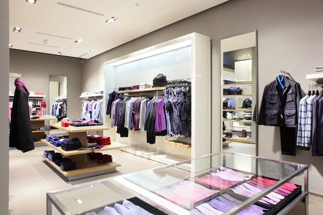Número: (19) 3466-2764
Email: redress.vestuario@outlook.com